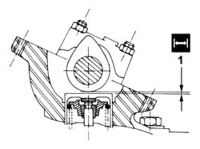
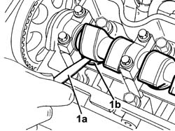

1036H14 VALVE TAPPETS - CHECK CLEARANCE
- Path
- Procedures > 10 ENGINE UNIT > 1036 TIMING SYSTEM > 1036H TAPPETS AND ROCKER SHAFTS > 1036H14 VALVE TAPPETS - CHECK CLEARANCE
- Kind
- repair procedure (removal / refitting; the operation number is the code)
- Applies to
- engines: 2.0 16V, 2.8 JTD 8V; all production periods
- Interactive page
- https://sloeber94.github.io/elrnDB-fDct/en/#/244000721
Applies to: engines: 2.0 16V; all production periods
See in Op. 1016A20
1. Position each cam facing upwards and check that the clearance corresponds to the recommended values.
 | Subject | Value |
|---|---|---|
1 | VALVE TAPPETS | mm |
- | Inlet valve clearance check | 0,15 - 0,25 |
- | Exhaust valve clearance check | 0,35 - 0,45 |

Applies to: all engines; all production periods
 Removing
Removing
 Refitting
RefittingSee in Op. 1016A10
See in Op. 1016A20
Op. 4450B04 RIGHT FRONT WHEEL R R
1. Using a feeler gauge (1a), measure the clearance (1b) between the camshaft lift and a tappet shim.
- Rotate the camshaft and check the clearance for all the tappets working on the crankshaft pulley.
| Subject | Value |
|---|---|---|
. | TAPPET SHIM | mm |
- | Inlet valves clearance in closed position | 0.45 - 0.55 |
- | Exhaust valves clearance in closed position | 0.45 - 0.55 |

Applies to: all engines; all production periods
Refitting
RemovingOp. 4450B04 RIGHT FRONT WHEEL R R
See in Op. 1016A20
See in Op. 1016A10